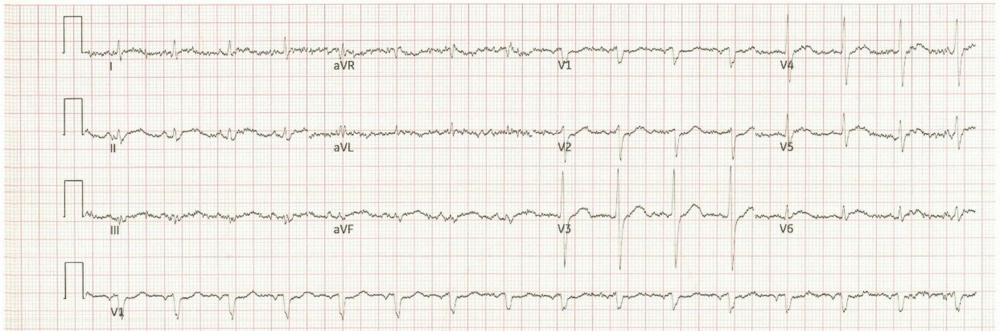
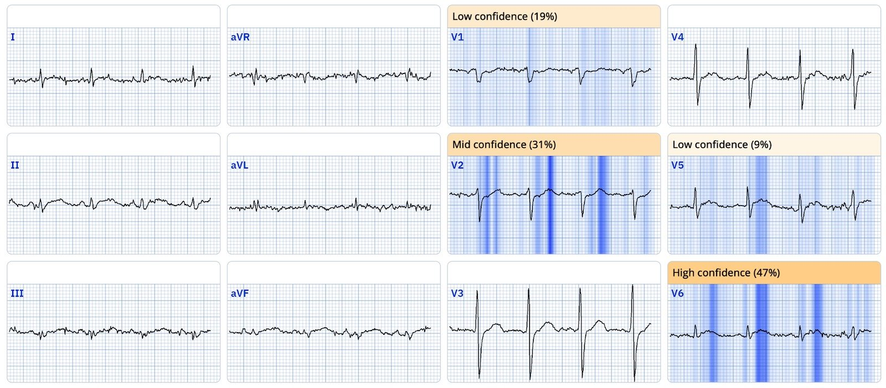
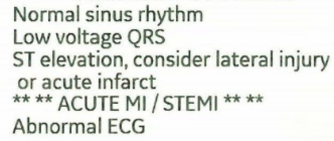
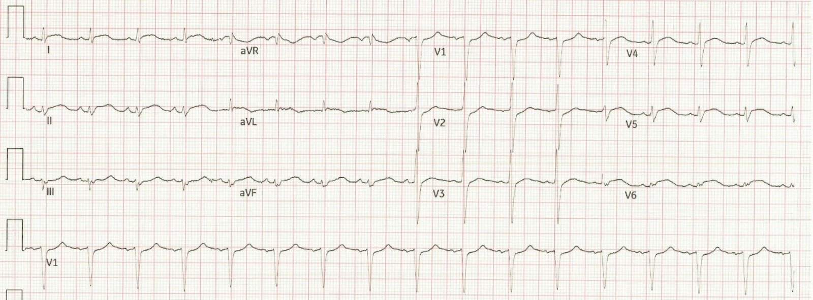
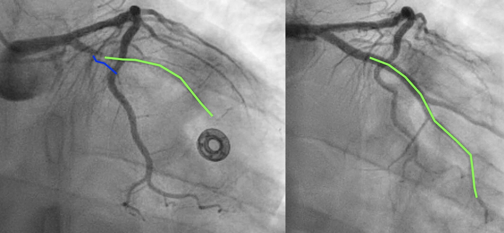
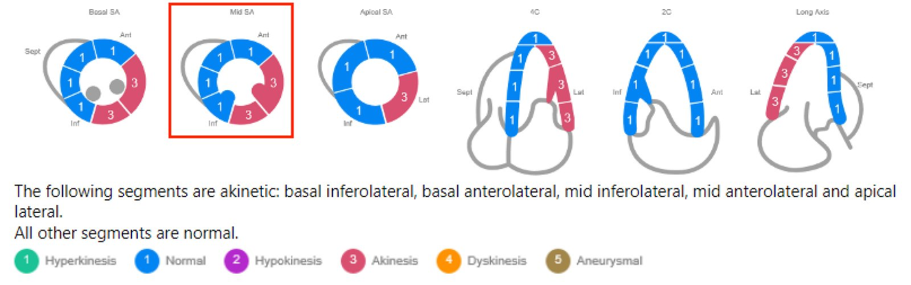
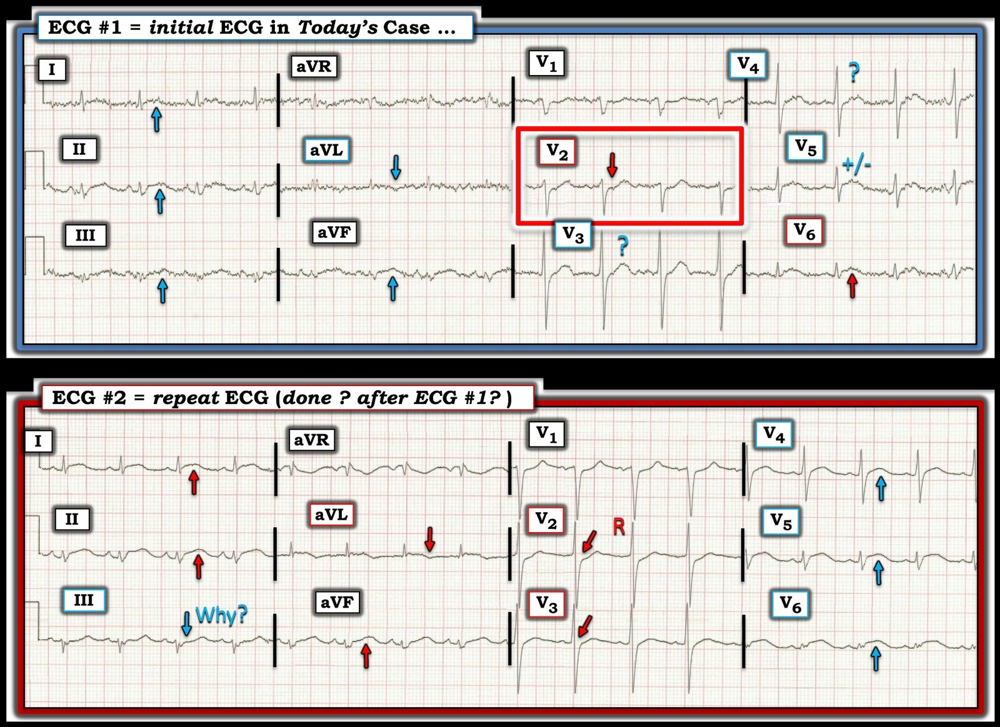

16/02/2025 — Yếu tố nào quyết định chẩn đoán cuối cùng STEMI hay NSTEMI? Có phải ST chênh lên? Tắc mạch vành? Hay điều gì khác? Là gì?
Bản dịch tiếng Việt của bài "What factor determines final diagnosis of STEMI vs. NSTEMI? Is it ST Elevation? Occlusion? or Something else? What?" – Dr. Smith’s ECG Blog. Giữ nguyên toàn bộ 8 hình ảnh và 3 video của bản gốc.
Câu trả lời nằm ở cuối bài, và được minh họa bằng ca bệnh này.
Tác giả: Willy Frick
Một người đàn ông khoảng giữa tuổi 30, mắc đái tháo đường típ 1, đến khám vì đau giữa xương ức và thượng vị hai ngày, được mô tả vừa “nhói” vừa bóp nghẹt.” Kèm theo buồn nôn, nôn và khó thở. Bệnh nhân nói cơn đau tăng khi nằm ngửa và giảm khi ngồi thẳng.


Bạn nghĩ gì?
Dù đường nền nhiều nhiễu, điện tâm đồ này dễ dàng chẩn đoán OMI. Queen of Hearts chẩn đoán OMI với độ tin cậy 0.99 (gần tối đa). Đây là phần giải thích của Queen.


Dưới đây là một số dấu hiệu chẩn đoán:
- Sóng T tối cấp (HATW) rất kín đáo ở chuyển đạo I
- STE và HATW ở II > aVF
- STD kín đáo ở V1 và V2
- STE và HATW ở V5 và V6
Do đó, đây là OMI thành dưới, thành sau, thành bên. Thực tế, ngay cả thuật toán của GE cũng nhận ra ca này (một phần) đúng.


Bác sĩ cấp cứu ghi nhận: “Điện tâm đồ ban đầu đầy nhiễu và khó đọc nhưng trông không giống STEMI.” Đây là một nhận định rất táo bạo ở một bệnh nhân đái tháo đường típ 1 với cơn đau ngực nghe rất đáng lo ngại. Người ta tự hỏi vì sao không ghi lại điện tâm đồ ngay lập tức, nếu nhiễu được cho là một vấn đề. Bệnh nhân được điều trị bằng aspirin và hỗn hợp thuốc tiêu hóa (GI cocktail), nhưng không đỡ đau.
Kết quả hsTnI ban đầu là 25,994 ng/L (tham chiếu <35 ng/L). Đến lúc này, bác sĩ mới bắt đầu dùng heparin và cho nitroglycerin, giúp cơn đau giảm từ 7/10 xuống 3/10. Bác sĩ cũng cho ghi lại điện tâm đồ.


Một lần nữa, điện tâm đồ dễ dàng chẩn đoán OMI thành dưới, thành sau, thành bên. Loại bỏ nhiễu làm độ tin cậy của Queen tăng từ 0.99 lên 1.0 (tối đa). Điện tâm đồ vẫn dương tính với STEMI theo GE. Bác sĩ cấp cứu hội chẩn tim mạch. Dù rõ ràng đã nghe bệnh sử trên cùng với hai điện tâm đồ có giá trị chẩn đoán và một giá trị troponin phù hợp với OMI, bác sĩ tim mạch vẫn cho rằng điện tâm đồ thể hiện viêm màng ngoài tim và đề nghị siêu âm tim.
Vài giờ trôi qua mà không có ghi chép nào về lý do chậm trễ. Siêu âm tim cuối cùng được thực hiện năm giờ sau điện tâm đồ có giá trị chẩn đoán đầu tiên. Kết quả cho thấy LVEF 35-40% với “giảm vận động thành lan tỏa kèm các bất thường khu trú.” Bác sĩ tim mạch khi đó mới đề nghị chuyển cấp cứu đến một trung tâm PCI.
Khi đến trung tâm PCI, bệnh nhân được đưa ngay vào phòng thông tim. Chụp mạch vành cho thấy tắc gần hoàn toàn do huyết khối ở LCx/OM1. Đây là góc chụp AP chếch chân (AP caudal) trước và sau PCI.
LCx thực sự đi trong rãnh nhĩ thất đã bị stent “nhốt” (jailed) và trông như bị tắc trên hình sau PCI. OM là một mạch lớn hơn nhiều.


Với những chậm trễ trong nhận diện và vận chuyển, thời gian từ điện tâm đồ có giá trị chẩn đoán đầu tiên đến bóng là 15 giờ 47 phút. Muộn đến mức này, lợi ích của PCI đã giảm đi rất nhiều. Troponin đạt đỉnh vượt giới hạn trên của ngưỡng định lượng 60,000 ng/L. Siêu âm tim cho thấy LVEF 33% với vô động thành bên.
Đây là sơ đồ vận động thành. Mặt cắt ở trên được đóng trong khung đỏ.


Chẩn đoán cuối cùng ghi trong hồ sơ: NSTEMI
BÀN LUẬN:
Thật khó hiểu làm sao chuyện này có thể xảy ra, nhưng đáng tiếc là blog có vô số ca tương tự. Nếu phải đoán, tôi nghĩ một số lỗi nhận thức có thể đã góp phần vào ca này là:
- Bệnh nhân còn trẻ, khoảng giữa tuổi 30. Nhưng không ai là quá trẻ để bị OMI. Ngay cả khi không do xơ vữa, người trẻ vẫn có thể bị OMI do thuyên tắc.
- Đây là các ca Young Women (Phụ nữ trẻ)
- Điện tâm đồ bị nhìn nhận là có ST chênh lên lan tỏa. Nhưng thực ra không lan tỏa — mà là thành dưới, thành sau và thành bên. Các chuyển đạo thành trước cho thấy rõ thay đổi soi gương.
- Mức độ ST chênh lên tuyệt đối (dù đủ để đạt tiêu chuẩn STEMI) vẫn tương đối nhỏ.
Chúng ta cũng thấy rằng cuối cùng bệnh nhân bị dán nhãn NSTEMI, dù đạt tiêu chuẩn STEMI và có tắc động mạch vành cấp. Vậy là chẩn đoán không phản ánh điện tâm đồ hay bệnh lý. Thay vào đó, chẩn đoán phản ánh mức độ khẩn cấp mà bệnh nhân được điều trị.
Giờ đây, khi dữ liệu được gửi tới National Cardiovascular Data Registry (Cơ sở dữ liệu Tim mạch Quốc gia), sẽ có vẻ như bệnh nhân đã được điều trị phù hợp như một NSTEMI! Không có kiểm tra độc lập từ bên ngoài đối với các chẩn đoán do bác sĩ tim mạch điều trị lựa chọn, nên việc trượt chỉ tiêu thời gian từ cửa đến bóng (door-to-balloon) có thể dễ dàng né tránh chỉ bằng cách gọi các ca này là NSTEMI.
Smith: Chúng ta thường nói về những OMI bị bỏ sót vì không đạt “tiêu chuẩn STEMI”. Nhưng trong ca này, điện tâm đồ thứ 2 chắc chắn đạt tiêu chuẩn STEMI, nhưng dù vậy vừa bị bỏ sót VỪA cuối cùng bị gọi là “NSTEMI”. Chúng tôi đang gửi đăng một bài báo cho thấy yếu tố quan trọng nhất quyết định chẩn đoán cuối cùng STEMI hay NSTEMI không phải là có hay không có ST chênh lên đủ tiêu chuẩn chẩn đoán, và không phải là có hay không có tắc động mạch vành cấp, mà là bệnh nhân được điều trị trong vòng ＜ 90 phút hay ＞ 90 phút. Dĩ nhiên điều này giúp dễ có số liệu thống kê đẹp hơn.

===================================
BÌNH LUẬN CỦA TÔI, bởi KEN GRAUER, MD (16/2/2025):
===================================
Một vài câu cách ngôn hiện ra trong đầu khi tôi xem lại ca hôm nay. Gồm có:
- “Rác vào = Rác ra … “
- — “Chuyện thường gặp thì thường gặp.”
- — “Nếu nghi ngờ — Hãy ghi lại điện tâm đồ” (và làm điều đó sớm! ).
“Rác vào = Rác ra … “
Máy tính là những công cụ tuyệt vời. Nhưng nếu dữ liệu chúng ta đưa vào máy tính là “rác” — thì câu trả lời máy tính đưa ra chắc chắn cũng sẽ là “rác”.
- Áp dụng câu cách ngôn thứ 1 này vào việc đọc điện tâm đồ: nếu điện tâm đồ đầy nhiễu đến mức không thể đánh giá rõ các dạng sóng — thì kết quả đọc điện tâm đồ đó của chúng ta cũng sẽ không rõ ràng y như vậy.
- Một trong những lỗi phổ biến nhất mà tôi quan sát được qua nhiều năm — là xu hướng của quá nhiều nhân viên y tế chấp nhận “rác” trên điện tâm đồ hoặc dải nhịp khi đánh giá bản ghi của một bệnh nhân cấp cứu. Dù đúng là đôi khi khó loại bỏ nhiễu (tức là, ở bệnh nhân đang rét run hoặc run rẩy) — nhưng phần nhiều (phần lớn) thời gian chất lượng điện tâm đồ ban đầu có thể ít nhất được cải thiện bằng cách ghi lại điện tâm đồ với nỗ lực giảm thiểu nhiễu.
- Điện tâm đồ ban đầu của ca hôm nay là một ví dụ hoàn hảo cho nguyên tắc này (bản ghi PHÍA TRÊN mà tôi đã đặt lại trong Hình 1). Dù chúng ta có thể đoán các thay đổi trên điện tâm đồ #1 — do biên độ QRS nhỏ ở nhiều chuyển đạo và mức độ đường nền gợn sóng — tôi thấy không thể tự tin vào kết quả đọc bản ghi này của bệnh nhân bị đau giữa xương ức 2 ngày (CP — Chest Pain, đau ngực). Tại sao phải đoán khi quyết định có kích hoạt phòng thông tim ngay hay không đang treo lơ lửng? Giải pháp: Ghi lại điện tâm đồ ngay lập tức!
“Chuyện thường gặp thì thường gặp.”
Bác sĩ tim mạch hội chẩn trong ca hôm nay đã làm chậm thêm quyết định thông tim vì bác sĩ này đọc 2 điện tâm đồ liên tiếp của ca hôm nay là phù hợp với viêm màng ngoài tim cấp — bất chấp giá trị Troponin ban đầu trên 25,000 ng/L.
- Hội chứng vành cấp thường gặp ở bệnh nhân đến khoa cấp cứu (ED) vì CP mới xuất hiện. Ngược lại — viêm màng ngoài tim cấp là hiếm gặp trong số bệnh nhân đau ngực đến ED (một điểm chúng tôi đã nhấn mạnh rất nhiều lần trên Dr. Smith’s ECG Blog — bao gồm Bình luận của tôi trong bài ngày 16 tháng Năm năm 2023 — và bài ngày 13 tháng Mười Hai năm 2019, cùng nhiều bài khác).
- Điểm MẤU CHỐT: Vì hiếm gặp viêm màng ngoài tim cấp thực sự ở bệnh nhân đến ED vì CP mới xuất hiện — chẩn đoán này chỉ nên được đặt ra sau khi đã tự tin loại trừ OMI cấp (và không phải sau khi Troponin ban đầu trên 25,000 ng/L và 2 điện tâm đồ liên tiếp lẽ ra phải được đọc là gợi ý mạnh OMI cấp cho đến khi chứng minh được điều ngược lại).
- Giải pháp: Cách dễ nhất để tránh chẩn đoán nhầm viêm màng ngoài tim cấp — là tự nhắc mình rằng phần lớn thời gian bệnh nhân đến ED vì CP mới xuất hiện sẽ hoặc là hội chứng vành cấp hoặc là “một bệnh khác”, chứ không phải viêm màng ngoài tim cấp.
- T.B. (P.S.): Tôi không thấy nhắc gì đến việc đã nghe tiếng cọ màng ngoài tim trong phần mô tả ca hôm nay. Không nghe kỹ tìm tiếng cọ khi đang cân nhắc chẩn đoán viêm màng ngoài tim cấp là không hiểu rằng tiếng cọ màng ngoài tim là dấu hiệu duy nhất có thể có giá trị chẩn đoán viêm màng ngoài tim cấp. Theo kinh nghiệm của tôi qua hơn 4 thập kỷ làm bác sĩ điều trị chính và hội chẩn các ca của đồng nghiệp — việc không nhắc đến (và ghi vào hồ sơ) có nghe tìm tiếng cọ hay không ở các ca nghi viêm màng ngoài tim là thiếu sót thường gặp nhất mà tôi từng gặp. Theo kinh nghiệm của tôi, không nhắc đến việc có hay không nghe thấy tiếng cọ màng ngoài tim như một dấu hiệu dương tính hay âm tính có nghĩa là người khám đã không nghe tìm dấu hiệu này.
“NẾU nghi ngờ — Hãy ghi lại điện tâm đồ (và Làm Sớm! ).“
Chúng ta không được biết thời gian giữa lúc ghi điện tâm đồ #1 và điện tâm đồ #2 là bao lâu (ngoài việc biết rằng ít nhất đã đủ thời gian để có kết quả Troponin).
- Bất kể thời gian giữa lúc ghi 2 bản ghi này là bao lâu — đó đã là quá lâu — vì điện tâm đồ ban đầu đầy nhiễu lẽ ra phải được ghi lại ngay lập tức theo nguyên tắc “Rác vào = Rác ra”.


Các dấu hiệu điện tâm đồ trong CA hôm nay:
Dù có các vấn đề kỹ thuật ở điện tâm đồ #1 — vẫn có một số dấu hiệu sâu sắc. Như Dr. Frick đã nêu — có các sóng T tối cấp kín đáo ở nhiều chuyển đạo (các mũi tên hướng lên mà tôi đã thêm vào).
- Tôi đóng khung chuyển đạo V2 trong một hình chữ nhật ĐỎ — vì đây là chuyển đạo ngay lập tức lọt vào “mắt” tôi. Chuyển đạo này loại bỏ viêm màng ngoài tim cấp khỏi chẩn đoán phân biệt của tôi. Trong số các dấu hiệu điện tâm đồ của viêm màng ngoài tim cấp mà tôi điểm lại trong Bình luận của tôi ở bài ngày 16 tháng Năm năm 2023 — không nên có ST chênh xuống ở chuyển đạo V2 (mũi tên ĐỎ ở chuyển đạo này).
- Thay vào đó, ở bệnh nhân đau ngực dai dẳng và Troponin tăng rất cao này — ST chênh xuống thấy ở chuyển đạo V2 có giá trị chẩn đoán OMI thành sau cấp. Chẩn đoán này được củng cố bởi việc không có ST chênh lên nào ở chuyển đạo kế cận V3 (vì bình thường nên có một chút ST chênh lên dốc lên thoai thoải ở các chuyển đạo V2,V3).
- Các dấu hỏi và nhãn +/- mà tôi thêm vào điện tâm đồ #1 cũng phủ định khả năng viêm màng ngoài tim cấp, vốn sẽ không cho ST chênh lên ở chuyển đạo V6 nhiều hơn ở các chuyển đạo V3,V4,V5. Thay vào đó (và bất chấp nhiễu) — ST chênh lên không thể nhầm lẫn ở chuyển đạo V6 xác nhận (cho đến khi chứng minh được điều ngược lại) rằng đang có OMI thành bên cấp đang diễn ra.
- Các dấu hiệu ở chuyển đạo chi phù hợp với OMI dưới-bên cấp là các đoạn ST chênh lên kín đáo ở các chuyển đạo I,II,III,aVF — và đặc biệt là sóng T đảo ngược ở chuyển đạo aVL (mũi tên XANH DƯƠNG ở chuyển đạo này). Đoạn khởi đầu ST thẳng đuỗn bất thường ở các chuyển đạo II và aVF vẫn thấy được qua nhiễu — nhưng trước khi đưa ra quyết định lâm sàng, bản ghi này cần được ghi lại.
- Cuối cùng — có điện thế thấp ở các chuyển đạo chi. Dù nhiều bệnh lý có thể gây điện thế thấp — đây có thể là dấu hiệu đáng lo ngại khi gặp cùng với nhồi máu cơ tim cấp, vì nó có thể là chỉ dấu của nhồi máu diện rộng kèm “choáng” cơ tim (Xem Bình luận của tôi trong bài ngày 12 tháng Mười Một năm 2020 và bài ngày 24 tháng Một năm 2020).
Điện tâm đồ ghi lại trong CA hôm nay:
Nhiễu gần như đã được loại bỏ hoàn toàn trên điện tâm đồ ghi lại. Như đã nói — chúng ta không được biết thời gian giữa lúc ghi điện tâm đồ #1 và điện tâm đồ #2 là bao lâu. Đã có một số thay đổi liên tiếp giữa 2 bản ghi này. Các thay đổi này thấy rõ nhất khi đặt hai điện tâm đồ cạnh nhau (như trong Hình 1).
- Biên độ QRS vẫn rất nhỏ ở các chuyển đạo chi. Xét đến kích thước nhỏ của phức bộ QRS ở cả 6 chuyển đạo chi — hình dạng sóng ST-T và mức ST chênh lên so với QRS là cực độ.
- Tại sao giờ lại có ST chênh xuống ở chuyển đạo III? Có lẽ mức ST chênh lên tăng ở các chuyển đạo bên I,aVL; V5,V6 do tắc LCx/OM-1 cấp đã làm giảm ST chênh lên do nhồi máu thành dưới đi kèm, khi nhìn ở chuyển đạo III có hướng đối nghịch (chuyển đạo III là chuyển đạo dưới nằm xa nhất so với các chuyển đạo bên I và aVL).
- Các dấu hiệu ở chuyển đạo trước tim trên điện tâm đồ #2 củng cố thêm OMI thành sau đang tiến triển cấp gồm: i) Xuất hiện sóng R cao ở chuyển đạo V2; và, ii) Tăng nhẹ mức điểm J – ST chênh xuống ở các chuyển đạo V1,V2,V3.
Kết luận: Có rất nhiều điều để học từ ca hôm nay …